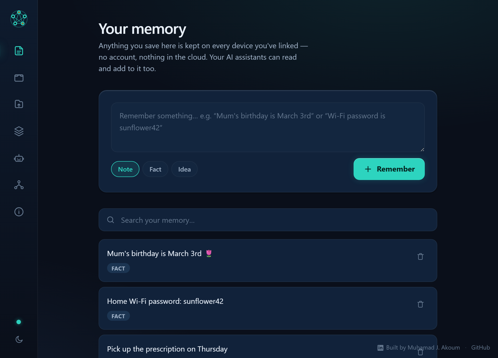
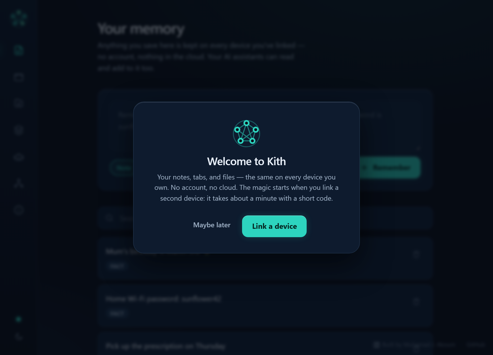
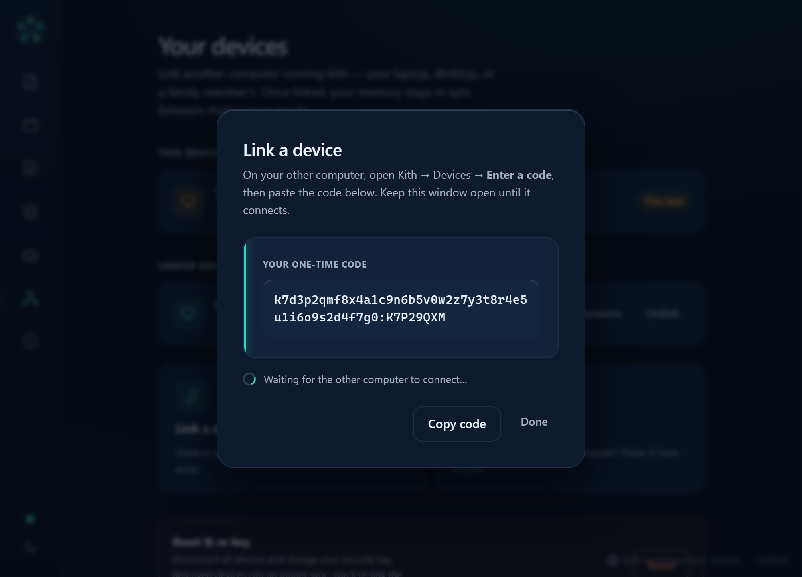
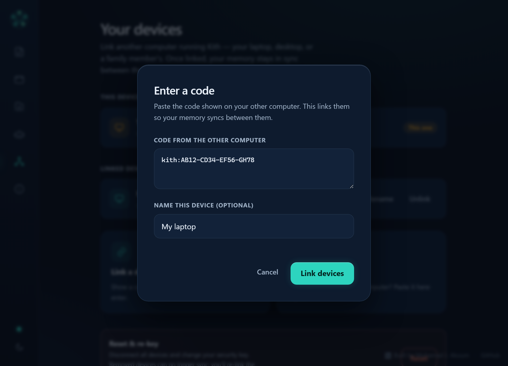
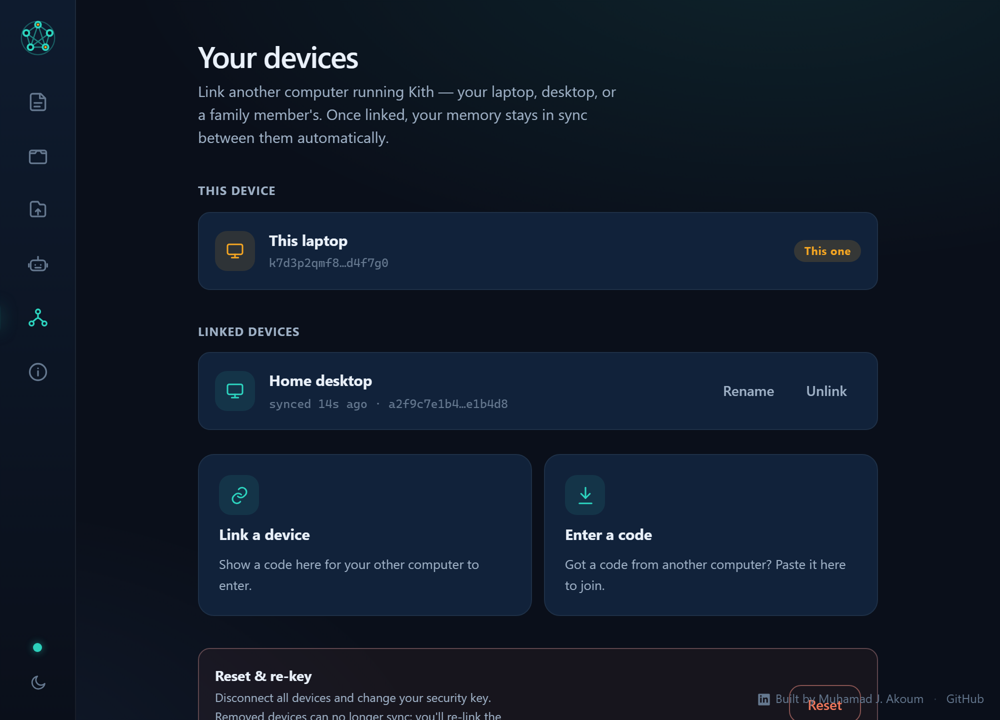
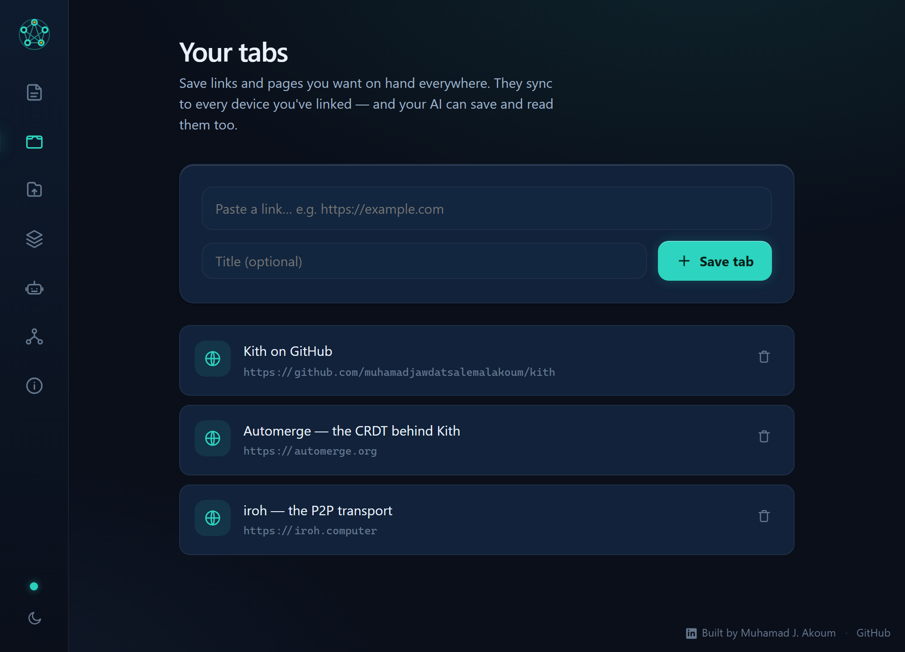
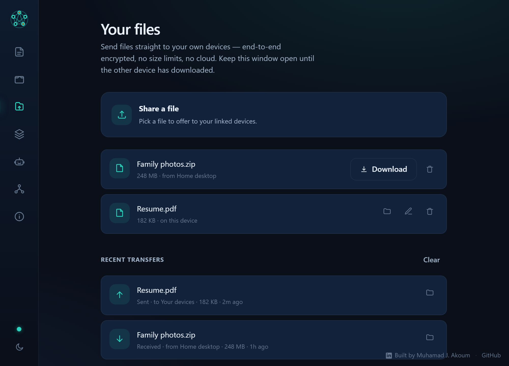
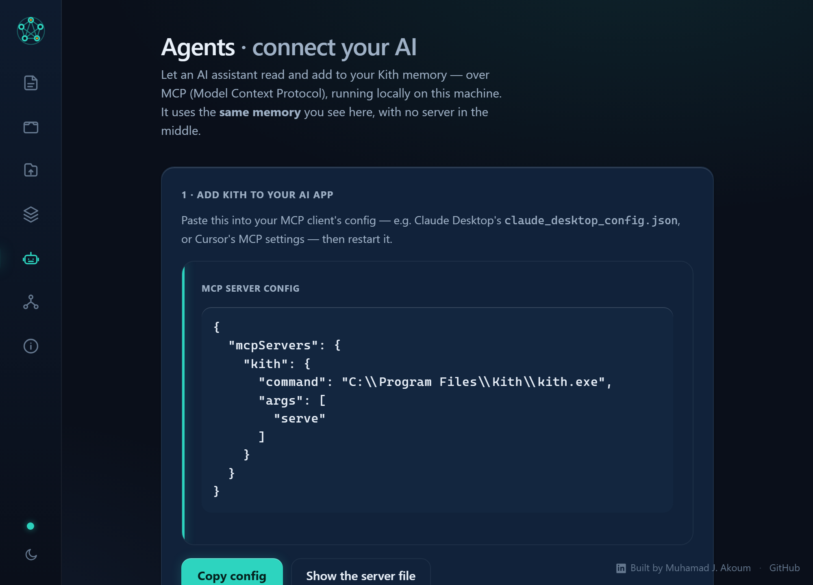

Kith keeps your memory, tabs, and files the same across all your own devices — directly, device‑to‑device, end‑to‑end encrypted. There's no server that can read your data, because there isn't one.
Windows · macOS · Linux — free forever, MIT/Apache-2.0

No account, no email, no QR scan. One device shows a one-time code; the other pastes it. They derive a shared key and start syncing — directly.

Download Kith on each computer you own and open it. There's nothing to sign up for — it's ready immediately.

On the first device, open Devices → Link a device. Kith displays a short code. It never travels over the network.

On the second device, choose Enter a code, paste, and name it. SPAKE2 turns the code into a shared key both sides trust.

Both devices now hold the same encrypted space. Each linked device shows when it last synced — and you can rename or unlink any of them.
That's it. Everything you save from now on appears on every linked device, automatically.
Memory, tabs, and files all ride on the same peer-to-peer mesh. Same security, same "it's just there on every device" feeling.
Jot a Wi-Fi password, a birthday, an idea. It's instantly on every device you own — and searchable from any of them.

Save a link on your work machine, open it on your laptop tonight. No browser extension lock-in, no cloud bookmarks service reading your history.

Drop a file to offer it; the other device downloads it directly, end-to-end encrypted. No upload to anyone's cloud, no size cap, no link that lives on forever.

Kith speaks the Model Context Protocol. Point Claude Desktop or Cursor at it and your assistant works with the same memory, tabs, and files you see — running locally, with no server in the middle.
{
"mcpServers": {
"kith": { "command": "/path/to/kith", "args": ["serve"] }
}
}
A flat mesh where every device is an equal peer holding a full, encrypted replica. There's no hub and no data-bearing server we run.
Devices find each other via the public mainline DHT and talk over encrypted QUIC (iroh). A relay is a last-resort fallback — and only ever forwards ciphertext.
State is an Automerge CRDT, so edits made on different devices — even offline — merge without conflicts or "which copy wins?" prompts.
Pairing uses SPAKE2, so the code never crosses the wire. Both document sync and file transfer are gated by your shared group key.
Designed so that no one — not even us — sits between your devices.
Encrypted in transit over QUIC/TLS 1.3 and encrypted at rest on disk. Access is gated by a shared group key only your devices hold.
There's nothing to sign up for and no identity to leak. Devices trust each other through a one-time pairing, not a login.
Unlink a device, or hit Reset & re-key to rotate the group key so a removed device can no longer sync — even if it kept a copy.
Every line is public and dual-licensed MIT/Apache-2.0. Read it, build it, verify the claims on this page yourself.
Alpha software. Built and tested, but not yet independently audited. Lovely for everyday notes, tabs, and transfers — just hold off trusting it with anything you couldn't bear to lose. Read the security policy →
Yes. Devices discover each other through the public mainline DHT and connect directly over QUIC. A relay is used only as a fallback when a direct connection can't be made, and it only ever forwards encrypted bytes it can't read. There's no data-bearing server we operate.
No account and no cloud, for one. And Kith isn't just folders — it's a small platform (memory + tabs + files) that's MCP-native, so your AI assistant can use the same data locally. Because state is a CRDT, you get conflict-free merges instead of "file (conflicted copy)" duplicates.
No. Linking is computer-to-computer with a short one-time code you paste. No phone app, no camera, no QR.
You keep working. Edits are stored locally and sync automatically the next time your devices can reach each other — nothing is lost.
Run kith serve (it's the same app binary) and point Claude Desktop or Cursor at it. Your assistant gets memory.*, tabs.*, and files.* tools operating on your local data — with no server in between.
Windows, macOS, and Linux. Download links are on the releases page.
Nothing. It's free and open source, dual-licensed MIT / Apache-2.0.
Free, open source, and serverless. Download Kith and link your first two devices in about a minute.